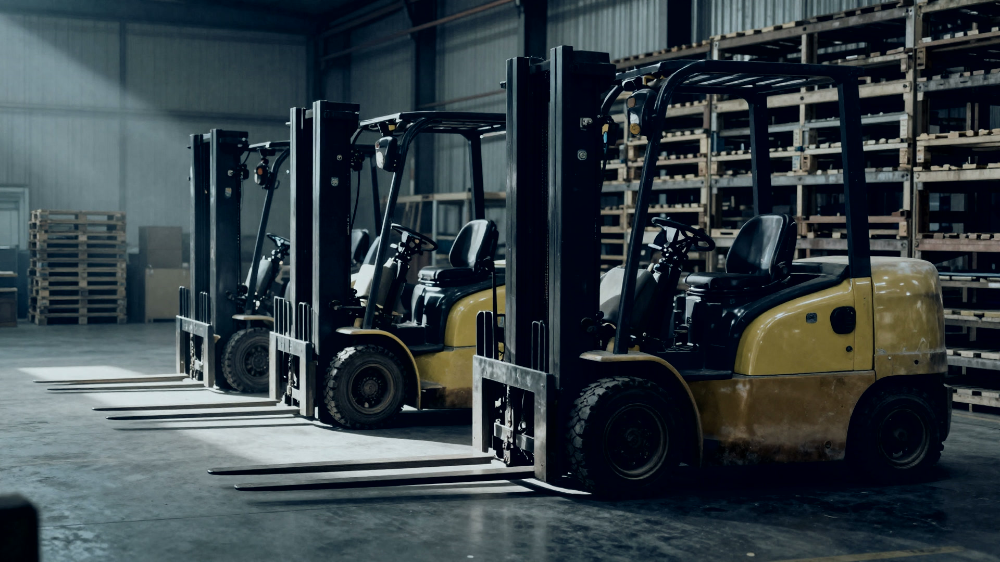
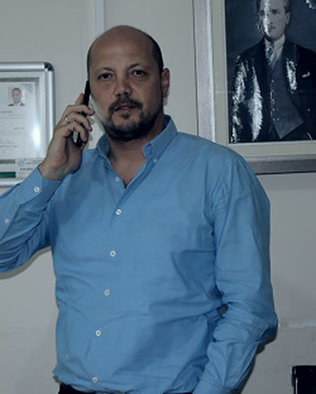
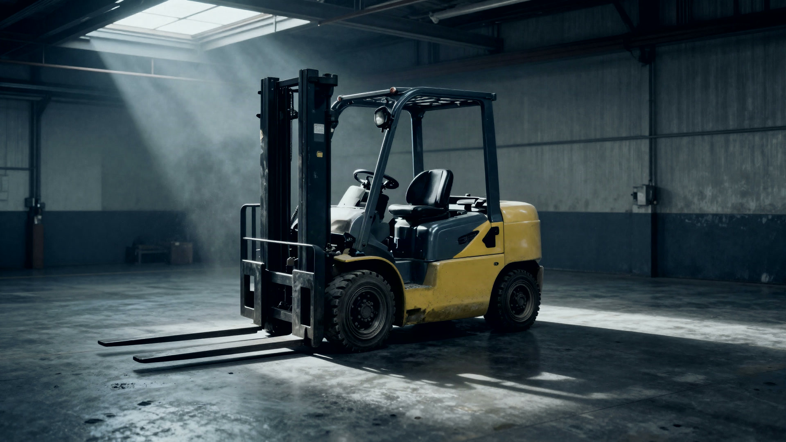
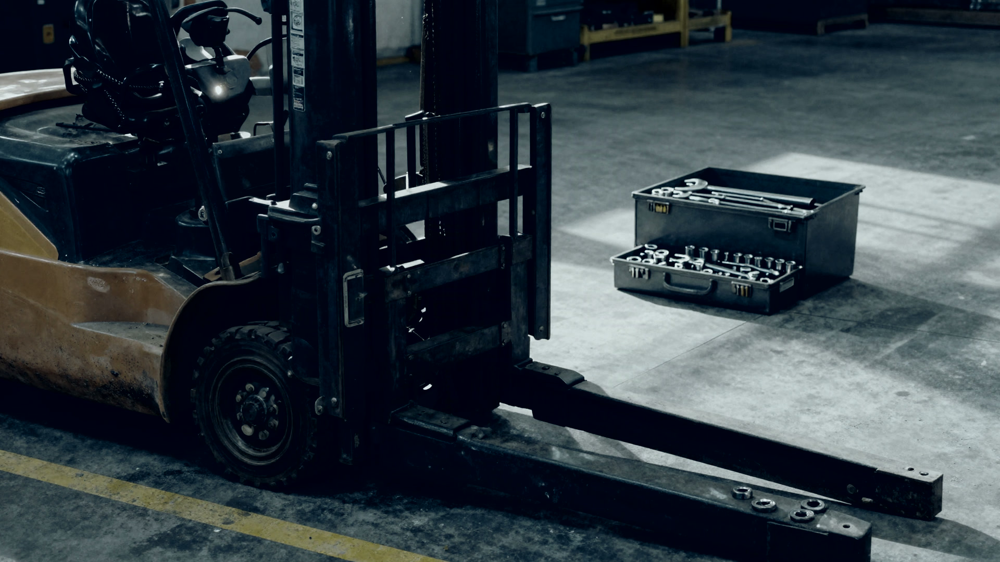
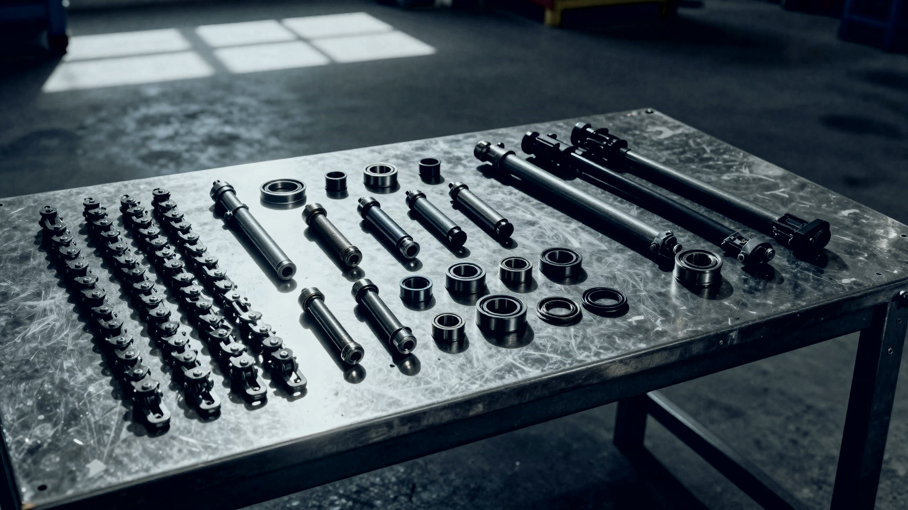

01

Satış
Sıfır ve ikinci el forklift, transpalet, istif makinesi. Simerlift satış ve servis noktasıyız.
- Sıfır satış
- İkinci el satış
- Simerlift akülü ve elektrikli
Makine durdu. Bant da durdu.
Servisi arıyorsun. Dönen yok.
Parça yurt dışından gelecekmiş. Yirmi gün.
Biz gün değil, saat konuşuruz.
2010'dan beri Bursa'da forklift ve istif makinesi. Satış, kiralama, servis, yedek parça. Simerlift satış ve servis.
BURSA, 2010'DAN BERİ
Bursa'da forklift ve istif makinesi satışı, kiralama, yerinde servis ve yedek parça. Simerlift satış ve servis. Gün değil, saat konuşuruz.
ADIMIZ NEREDEN GELİYOR
Makine durunca kimse sana fatura kesmez. Ama bant durur, tır gümrükte bekler, personel boş oturur. O saatlerin bedelini kimse yazmaz, herkes öder.
Firmanın adını oradan aldık. Sen sorunu anlat, çözümü biz getirelim.
KURUCU

Okan HallemoğluKurucu ve sahibi
Çözüm İstif'i 2010 yılının Ağustos ayında Okan Hallemoğlu kurdu. Firma tek ortaklı, o gün bugündür aynı kişi işin başında.
Firmayı kurmadan önce on beş yıla yakın süre iş makineleri, yedek parça ve endüstriyel ürün tarafında satış ve bölge müdürlüğü yaptı. Temsa İş Makineleri'nde iş makinesi satışını, TVH Yedek Parça'da forklift yedek parçasını içeriden gördü. Yani bu işi hem bayi tarafından hem parça tarafından biliyor. Aldığı satış hedeflerini her yıl tutturdu, çoğu yıl üstüne çıktı.
İstanbul Üniversitesi İşletme Fakültesi İngilizce İşletme bölümünden mezun. İleri derecede İngilizce biliyor, ithal makine ve parça tarafında bu her gün işe yarıyor.
Telefonu açtığında karşındaki kişi bu. Arada çağrı merkezi yok.
ÖNCEKİ GÖREVLERİ
NE YAPIYORUZ

Sıfır ve ikinci el forklift, transpalet, istif makinesi. Simerlift satış ve servis noktasıyız.

Günlük, haftalık, aylık. 5 tona kadar akülü ve dizel istif makinesi. Kendi filomuzda 16 makine duruyor.

Makine sana gelmez, biz makineye gideriz. Yerinde arıza tespiti, atölyede revizyon, rafta yedek parça.
SIMERLIFT
Simerlift makinelerini İzmir Kemalpaşa'daki kendi fabrikasında üretiyor. Yirmi yılı aşkın üretim tecrübesi var ve Avrupa'dan Amerika'ya kadar ihracat yapıyor. Yerli üretim olması iki şeyi değiştiriyor: parça yurt dışından beklenmiyor ve servis desteği aynı ülkeden geliyor.
3W üç tekerlekli, dar koridorda döner. 4W dört tekerlekli, iç ve dış mekanda çalışır.
ES15M elektrikli istifleyici, istifleme ve taşımayı tek makinede birleştiriyor. ET15MH-P elektrikli transpalet, yatay taşıma ve yükleme boşaltma için.
Daha önce Ceylift, Komatsu, Toyota, TCM, Daewoo, Baoli, İlift, Federal Power, Pegasolift ve Clark makineleri sattık ve servisini verdik. Elindeki makine hangi markaysa ara, bakabildiğimizi telefonda net söyleriz. Atölyede dizel ve benzinli makinelere bakmaya devam ediyoruz.
NASIL ÇALIŞIYOR
Telefonu aç, makinenin markasını ve neyi yaptığını söyle.
Ekip yola çıkar, arızayı makinenin başında tespit ederiz. Makineyi servise taşıtmana gerek kalmaz.
Parça raftaysa aynı gün takılır. Değilse ne zaman geleceğini tarih vererek söyleriz.

ATÖLYE
Servis ağımız 2014'ten beri çalışıyor. Kiralık filomuzun ve müşterinin kendi makinelerinin ağır işleri burada yapılıyor.
Dizel ve benzinli forklift motorları için komple revizyon.
Şanzıman sökümü, parça değişimi ve montajı.
Fren sistemi bakımı, balata ve hidrolik aksam yenileme.
Kaçak tespiti, pompa ve silindir arızalarına çözüm.
Forklift kabini ve kaporta tadilatları.
Forklift camı ölçüsünde kesilir ve yerine takılır.
Akülü istif makineleri ve depo ekipmanları için akü servisi.
Düzenli bakımla arızayı olmadan önce yakalarız.
İKİNCİ EL
Piyasada saat sayacı düşürülmüş makine çok. 2023 model diye alırsın, on beş bin saat çalışmış çıkar. Yorgun makineyi sıfır fiyatına almış olursun. Sattığımız her ikinci el makinenin gerçek çalışma saati ve bakım geçmişi yazılı verilir.
NEYE BAKIYORUZ
MÜŞTERİ YORUMLARI
Kafkas imalat ve fabrika olarak forklift ve istif makinalarımız ile ilgili Çözüm İstif Makinaları Servis Sanayi firması ile çalışmakta olup kendilerinden almakta olduğumuz hizmet kalitesinden memnunuz. Ticari konulardaki yaklaşımlarından ve acil taleplerimize verdikleri hızlı cevap ve kaliteli hizmetlerinden dolayı teşekkür ederiz.
Uzun yıllardır İNOVA Koltuk Sistemleri olarak gerek forklift kiralama, gerek forklift ve istif makinaları alımlarımızla ilgili Çözüm İstif Makinaları Servis Sanayi firması ile çalışmaktayız. Almış olduğumuz hizmetten, ticari konulardaki yaklaşımlarından, acil taleplerimize verdikleri hazır cevaptan ve ürün ile servis işlemlerinin arkasında güvenle durduklarından dolayı teşekkür ederiz.
Yılkan Metal Torna Sanayi ve Ticaret A.Ş. olarak gerek forklift kiralama, gerek istif makinaları alımımızla ilgili Çözüm İstif Makinaları Servis Sanayi firması ile çalışmaktayız. Kendilerinden almış olduğumuz hizmetlerden, ticari yaklaşımlarından, ürün, servis ve kalite gereği vermiş oldukları tüm hizmetlerinden dolayı teşekkür ederiz.
Ber-Nak olarak forklift hizmeti aldığımız Çözüm İstif Makineleri firmasına 2012 yılından beri hiçbir şekilde sorun yaşatmadığı için kendilerine teşekkürü borç biliriz, başarılarınızın devamını temenni ederiz.
B-Tek İmalat Sanayi ve Ticaret Ltd. Şti. olarak Çözüm İstif Makinaları Servis Sanayi firması yaklaşık bir yıldır güvenilir ve kaliteli hizmetiyle bizlere hizmet vermektedir.
Detay Palet ve Orman Ürünleri firması olarak Çözüm İstif Makinaları Servis Sanayi firmasıyla 2013 yılından beri çalışmaktayız. Kullandığımız forkliftlerin hepsi bu firmaya aittir. Firma sorunlar karşısında acil aksiyon alıyor ve iş akışımızda aksama yaşamıyoruz.
REFERANSLAR
Otuz sekiz firma ile çalışıyoruz. Aralarında Borusan Lojistik, CEVA Lojistik, Erbak Uludağ İçecek, Uludağ Maden Suyu, Özdilek Alışveriş Merkezleri, PTT Bursa, Eyüb Sabri Tuncer Kozmetik ve Roda Port Liman var.
SORULAR
Simerlift satış ve servis noktasıyız. Simerlift yerli üretim, tamamen elektrikli makineler yapıyor. Bunun dışında bugüne kadar Ceylift, Komatsu, Toyota, TCM, Daewoo, Baoli, İlift, Federal Power, Pegasolift ve Clark makineleri sattık ve servisini verdik. Elindeki makine bu listede yoksa da ara, bakabildiğimizi ve parçasını bulabildiğimizi telefonda net söyleriz. Bakamıyorsak da onu söyleriz, seni oyalamayız.
İşin sürekli mi geçici mi olduğuna bakıyoruz. Sezonluk veya kısa süreli ihtiyaçta kiralama daha mantıklı, peşin para çıkmıyor ve bakım bizde kalıyor. Sürekli kullanacaksan satın almak uzun vadede daha ucuz, amortisman da vergi tarafında işine yarıyor. Kendi filomuzda 16 makine var, günlük haftalık aylık verebiliyoruz. Ara, makineyi ayda kaç saat çalıştıracağını söyle, hesabı beraber yapalım.
Kontrolsüz alırsan evet. En yaygın numara saat sayacının düşürülmesi. Biz sattığımız makinenin gerçek çalışma saatini ve bakım geçmişini yazılı veriyoruz. Beğenmezsen alma.
Ara, makinenin nerede olduğunu söyle, sana o gün için net bir saat verelim. Yola çıkmadan önce ne zaman orada olacağımızı biliyor olursun.
Sık arızalanan parçaları rafta tutuyoruz, rafta olan aynı gün takılır. Rafta olmayan için sana tarih veririz. Gelecek deyip ortadan kaybolmayız.
Yapılır. Atölyemizde dizel ve benzinli forklift motorlarının ağır revizyonunu, şanzıman ve fren revizyonunu, hidrolik sistem arızalarını çözüyoruz. Kaporta tadilatı, cam kesme ve montaj, traksiyoner akü servisi de burada yapılıyor. Makineyi atmadan önce bir bakalım.
Garantisi devam eden yeni makinede şart, garanti düşmesin. Garantisi bitmiş makinede şart değil. Önemli olan servisin o markayı biliyor olması ve parçayı bulabilmesi.
TEK ADIM
En hızlısı telefon. Yazmayı tercih edersen formu doldur, mesajın WhatsApp'ta hazır gelsin.
Mesajın hazır, göndere basman yeterli. Açılmadıysa doğrudan 0532 445 42 02 numarasını arayabilirsin.